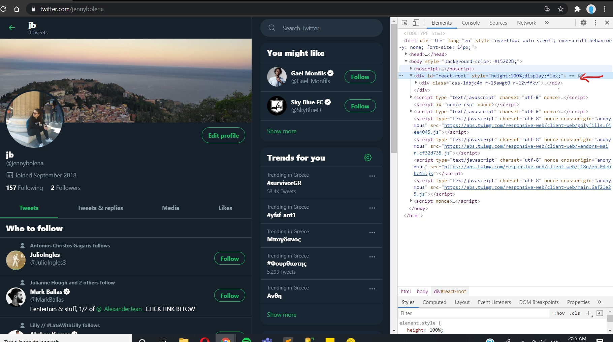
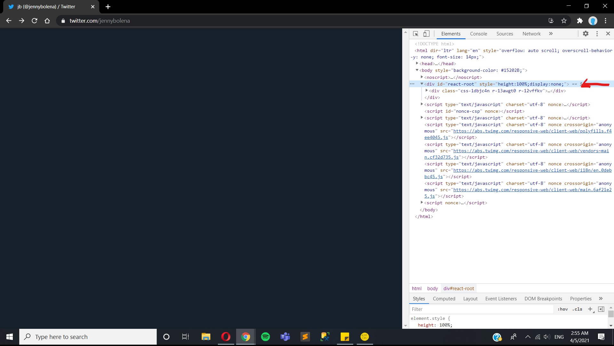

Change display
Before
vs
After
The display of the root element is set to flex. It involves all the content of the page. Setting the display to none will make all the content not show.
vs
The display of the root element is set to flex. It involves all the content of the page. Setting the display to none will make all the content not show.
vs
It is seen that the body backound color is set to a spesifc close to blue color. I have change it to white and as it can be seen.
vs
My username is jb. By going to the correct element which inside a span I changed it to: i just change the text.

vs
The cursor for the upper side wherethe images can be seen and changed is set to pointer.Just for the fun of experimenting with the dev tools i changed the pointer style to progress.
vs
The initial padding to the aside element of you might like is set to 15px. I've chnage it to 50px and that is strongly visible. It has also affected the padding of other elements too because they are assigned with the same class name.
vs
By changing the border of the div element from 0 solid black to 1px solid white all the borders of all the elements are affeced. That can be seen and identified by the white border rectangles.
vs
The top margin of the search box at the the top right corner is set to 0. I changed it to 10px to show the difference. It can be seen that the margin-top is applied to the search box, but it comes with strage behaviour of other elements margin. It might be because of the way the other elements are defined and related with each other.